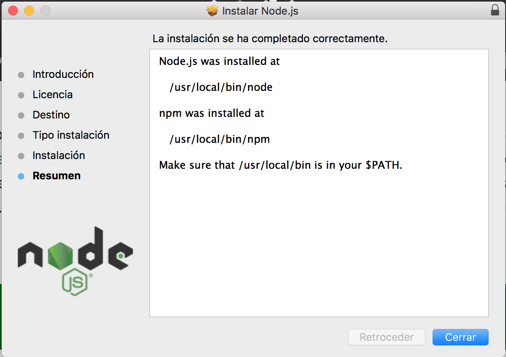

Node.js
¿Qué es Node.js?
Node.js es un entorno de ejecución para JavaScript construido con el motor de JavaScript V8 de Chrome. Node.js usa un modelo de operaciones E/S sin bloqueo y orientado a eventos, que lo hace liviano y eficiente. El ecosistema de paquetes de Node.js, npm, es el ecosistema mas grande de librerías de código abierto en el mundo.
Para prodceder con la instalación nos dirigimos a la página oficial de Node.js. Una vez dentro de la página descargamos el instalador según nuestro sistema operativo.
Npm es el gestor de paquetes por defecto en JavaScript. Nos permite buscar, compartir y reusar paquetes de código de diferentes desarrolladores.
A continuación se muestran unas capturas que ilustran el proceso realizado.
Descarga del instalador:

Apariencia del instalador:

En la consola de comandos de nuestro sistema operativo tecleamos node y se abrirá el intérprete de Node.js. En él se puede teclear operaciones aritméticas, así como usar funciones de JavaScript, etc. (A lo largo del curso se describirán más funciones).
Apariencia del intérprete:

Para acabar con esta sección, hablaremos sobe npm, el gestor de paquetes de JavaScript. La siguiente imagen ilustra cómo es la página oficial de npm.
Página oficial de npm:

Por último comprobamos que npm está en su última versión y que se encuentra instalado en nuestro ordenador.